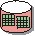

| Artefacto: Atributos de requisitos |
|  |
|
|
El producto de trabajo Atributos de requisitos proporciona un repositorio del texto de requisito, atributos y rastreabilidad para todos los requisitos. Debe ser accesible para toda la empresa de desarrollo. |
| Roles | Responsable: | Modificado por: |
|---|---|---|
| Tareas | Entrada a: | Salida de: |
| Uso del proceso |
|
|
| Esquematización breve |
Las vistas siguientes deben estar disponibles para ver el estado actual del producto de trabajo: 1. Matrices de atributos de requisitos
1.1 <tipo de requisito> 2. Matrices de rastreabilidad de requisitos 2.1 <tipo de requisito>
2.1.1 <tipo de requisito rastreado> 3. Árbol de rastreabilidad de requisitos 3.1 <tipo de requisito>
3.1.1 <tipo de requisito rastreado> |
|---|
| Opciones de representación |
Decida si los atributos deben documentarse en los productos de trabajo de requisitos, en el plan de gestión de requisitos, o gestionarse utilizando herramientas de gestión de requisitos como, por ejemplo, Rational RequisitePro. Si utiliza una herramienta de gestión de requisitos, puede mantener la información del repositorio directamente en las vistas guardadas de la base de datos de gestión de requisitos. |
|---|
| Listas de comprobación | |
|---|---|
| Conceptos |
© Copyright IBM Corp. 1987, 2006. Reservados todos los derechos. |